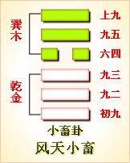

高岛易断 - 12天地否
高岛易断 12 天地否
"否
［64］
"字从不，从口。不者弗也，弗与茀通。茀者车后之蔽障，以茀蔽口，呼吸蔽塞之会意。医书"心下痞硬"之痞亦同，即取此义也。
否：否之匪人，不利君子贞。大往小来。
▲ 篆书否
《象传》曰：否之匪人，不利君子贞，大往小来，则是天地不交而万物不通也，上下不交而天下无邦也。内阴而外阳，内柔而外刚，内小人而外君子。小人道长，君子道消也。
此卦《乾》天在上，《坤》地在下，自天地实体见之，在上在下，位置自然得直。然此卦所取，不在形而在气，谓天气不降，地精不升，阴阳呼吸，否塞不通之象，名之曰《否》。盖天地阴阳之气，不相交通，虽造化亦无能作用。其交通不正，以致上下否塞，数十百年中时或有之。尝闻天明年中，夏大旱，太阳之色，赤如丹砂，五谷不登，天下饥馑，即天气不降，地精不升，《否》之时也。"否"字分之为不口，即谓凶荒，万民不得口食也。《彖传》曰，"天地不交而万物不通也"。《泰》《否》二卦，《彖传》始用"则是"二字，犹曰其故不过如是，非有他故也。
以此卦拟人事，凡一家之中，上卦为父兄，下卦为子弟，父兄过于刚猛，子弟过于愚柔，上下性情不合，以致动辄相左，百事乖张，往来悉是奸邪，仆妾敢行背逆，或凭空而启狱讼，或无故而陷飞灾，钱财耗损，声名破裂，家道之日替，实由时运之否而来也。推否运之极，年时则风雨不调，疾病则胸膈不通，经商则有货难销，求名则历试被黜，虽有善者，亦无如何也，故曰"不利君子贞"。君子亦惟顺守其变，以避患而已。故当初爻，君子惟连类而退，汇守其贞。二爻惟以道自处，不肯屈己从人；三爻则以尸位素餐为羞；四爻则否极泰来，方可乘时而动；五爻则否已将止，又惕"其亡"之诫；上爻则"否倾"矣，故曰"后喜"。处否之难如此，苟一不慎，祸必随之，是所谓"小人道长，君子道消"之时也。凡人值此否运，终当守道安命，以俟时运之亨，斯不失为君子也。
以此卦拟国家，《乾》在上，《坤》在下，阳气上浮而不降，阴气下沉而不《升》，上下二气隔绝，是君臣之志不通也。小人柄政而在内，君子退居而在外，一时乘时得势者，皆非君子也，故曰"非人"。国家值此否运，君骄臣馅，国事日非，正道日坏，内则权臣擅政，外则强敌压境，岁时不登，而饥馑洊臻，兵役不息，而疆土日蹙，故曰"天地不交而万物不通，上下不交而天下无邦"。国家将奚由得治哉！此时君子惟居《易》俟命，独善其身，所谓邦无道则隐，故曰"不利君子贞"。小人则洋洋得意，诡计百出，其巧者或将内挟奸邪，外托正真，掩其不善，以著其善，谓之"内阴而外阳，内柔而外刚"。又或收罗君子，以张羽翼，如王莽之礼贤下士，藉以文奸，即二爻之"包承"是也。是以小人日进，君子日退，谓之"小人道长，君子道消"也。"道"字中，包括天之阴阳，地之刚柔，国家之治乱，内外之处置，进退得失，其义甚广，所以明《否》之运，皆由阴阳不交和而来。《易》之系辞，《泰》则归之于天，否则责之于人，故《泰》之《大象》曰"财成辅相"，不敢贪天功，《否》之《大象》曰，"君子以俭德辟难，不可荣以禄"，圣人垂诫之意，可谓深也。
通观此卦，下三爻者《否》之时，为小人用事，上三爻者否运已极，为趋《泰》之渐。初六虽小人并进之时，亦未尝无君子，君上亦未尝不求士也。在下之君子，不忍忘君，见可进而进，故曰"贞吉"。六二，当否之时，君子固当退避，然或有枉道行权，屈身济世，如汉陈平之于诸吕，唐狄仁杰之于诸武，亦足以救否也，故曰"包承"。又"包"者，苞也，"包承"者，受苞宜也。君子处浊世，往往独立廉介之节，为小人所畏忌，不啻不能保身，且不利于国家，故有姑受小人之苞直，以晦清节也。是随流扬波之士，谓之"包承"。又有痛恨小人，而欲去之，因势有不可，姑以利啗之，以潜消其凶焰，即枉道行权之计，亦谓之"包承"。在小人而能"包承"君子，是小人中之君子也；君子受小人所"包承"，是君子中之小人也。大人当否，必不受其包，故亨。六三，小人之尤者，本欲伤害君子，尚蓄而未发，今感君子之德，内省而羞耻，故曰"包羞"。盖君子遇凶顽，使之畏，不如使之耻。九四，当阳来之初，为转《泰》之渐，上近九五，君子见泰机之已动，方将出而济否，故曰"有命无咎，志行也"。九五，明君在上，从容而体否，即中兴之君也，故曰"休否"。上九，否运倾消，已及泰来之时，故曰"倾否"。"休否"之后，又恐其正之复陷于邪，治之复入于乱，故有"系于苞桑"之戒。夫天地以好生为德，圣人以思治为心。人君而知此，必思所以杜祸患之端；人臣而知此，必思所以严邪正之辨；小人而知此，当亦知所以变也。
此卦《泰》之反，而次于《泰》，盖人情安乐，则生骄情，骄情则生凶咎，是自然之势也。故《序卦传》曰："泰者通也，物不可以终通，故受之以否，"然人能畏天命，应时而守中庸之道，纵令时运之否，可使转而趋泰。故否而泰，保泰而期其不否者，君子之心也；泰而否，任否而不期复泰者，小人之心也。此卦天气归地，隔塞而为否，否运之来，虽为天运之使然，而君子不敢委之于天，必欲尽其道以济其否。盖《泰》卦先言往来，以时而言；《否》卦先言"非人"，属人而言。《泰》者时为之，《否》者人为之。益知天道未尝不欲长泰，人实为之。谓之何哉？惟君子为能以人胜天，故天与人常相因者也。
《大象》曰：天地不交，否。君子以俭"德辟"难，不可荣以禄。
"天地不交"，即阴阳二气闭息之会也。此时君臣乖睽，上下离叛，内政不修，外乱交迫，是无道之极也。所谓"天地闭而贤人隐"，君子于此，惟当潜身修德，隐居避禄而已，若犹萦情利禄，恐禄之所在，祸即随之，至此而始欲避难，已不及也。是以君子必韬光匿彩，穷约自守，避之惟恐不远，即有以禄来"包承者"，君子亦不受其包，盖惟知以德为荣，而不知以禄为荣也。
【占】 问时运：目下诸事不利，宜慎守，不宜妄动。
○ 问营商：宜买入，不宜卖出，隐藏待价，后可获利。
○ 问战征：不利攻，宜退守。
○ 问家业：惟宜克俭克勤，方可免祸。
○ 问疾病：是痞隔之症，宜节饮食。
○ 问生产：恐生男不育。
○ 问失物：恐不可复得。
○ 问婚嫁：有分离之象。
○ 问谋事：不成。
高岛易断 初六：拔茅茹，以其汇。贞吉，亨。
《象传》曰：拔茅贞吉，志在君也。
"拔茅茹，以其汇"，解见《泰》初九下。此卦与《泰》卦虽同，而别分内外，以气运变迁言之。下卦《坤》，为《否》中之否，上卦《乾》，为《否》中之泰。此内卦之三阴相连，犹《泰》内卦之三阳相连，故初爻之辞，与《泰》初爻同。惟此爻以阴柔之小人，三阴相连，一阴起则众阴并起，例如大奸得志，群奸竞进，谓之"拔茅茹以其汇"。初之时，小人恶迹未形，且与四相应，尚有改而为君子之意，故圣人不虑绝之，而教之以贞，如能祛邪从正，以道匡时，固可得吉而亨也。《象传》曰"拔茅贞吉，志在君也"，谓小人初时得位，亦未尝无忠君爱国之心，苟与君子并进，能从君子之道，即可为君子也，较之只知有身，而不知有君异矣。
【占】 问时运：吉，宜以合伙谋事。
○ 问营商：于新立商业，用人宜慎。
○ 问战征：当牵左右营，合队并进。吉。
○ 问家宅：主有亲戚同居，吉。
○ 问疾病：恐患传染之症，然无害也。
○ 问六甲：生女。
○ 问失物：可得。
高岛易断 六二：包承。小人吉，大人否亨。
《象传》曰：大人否亨，不乱群也。
"包承"者，谓承顺于上，下顺上，臣承君，阴为阳所包之义。"小人"，皆指占者德位，及事之大小而言。夫为臣者不一，有事人君者，有安社稷者，有天民者，有大人者，如六二则事其君而为容悦者也。此爻柔顺中正，上应九五，小人之巧者，包承容悦，以得其君之宠幸，爵禄之崇，赐予之丰，可为吉矣。然阴柔不才，当否之时，无开通闭塞，拨除骚乱之力，但与上下二阴，为阳所包。以其能包容君子，礼贤下士，藉作攀援，较与嫉正妒贤，残害君子者，固有间焉，故曰"包承，小人吉"。而在大人，则惟固守其否，穷居乐道，必不肯委曲以效其承，其身虽否，道自亨也。盖志高品洁，断不随流扬波，混入于小人之群，故《象传》曰"不乱群也"。盖可见君子处否，不失其道也。
【占】 问时运：目下顺适，能以宽容待人，万事皆吉。
○ 问商业：买卖皆利。
○ 问讼事：防有贿赂伪造等弊，始审或不利，上控则吉。
○ 问家宅：家口平安，年老家长，或恐有疾，亦无害也。
○ 问战征：必可获胜，主将或有小害。
○ 问失物：须就包裹内见之，必得。
○ 问生产：得女，产母有疾，无妨。
【例】 明治二十二年春，亲友某氏，访余山庄，某氏系卖蚕丝为业，曰：今年横滨丝价大昂，势必随日腾贵，欲归吾乡奥州，多请办之，占一大利，请占其得失。筮得《否》之《讼》。
断曰：此卦天升而在上。地降而在下，拟之物价，有高低悬隔之象。《彖》辞曰"大往小来"，明明言去出之金大，而收人之利小也。据此占，则有损无利必矣。在足下以生丝为商业，际此时机，固未可袖手旁观，当授一有盈无亏之计。爻辞曰"包承，小人吉，大人否亨"，吾劝足下归于奥州，买卖生丝，可效牙保之行，今日所买，即今日卖之，获利虽微，保无亏耗，万不可作一抛万金之想。所谓"包承，小人吉"者，盖明言小利则吉也，若必以巨万购买，恐货方买入，而时价低落，且各处蚕丝贩集，货多价跌，恐后日价亦未必再腾也，谓之"大人否"。
后某氏趋福岛地方，从事生丝卖买，一时丝市腾贵，人皆争购，未几，价忽低落，买者均多损失。氏独信此占，斯不亏本，且得微利。
高岛易断 六三：包羞
［65］
。
《象传》曰：包羞，位不当也。
羞者，耻其非之谓也；"包羞"者，掩蔽羞辱也。此爻居内卦阴之极，为恶既深，既昧于审时，又短于量己。今《否》中之否既去，《否》中之泰将来，有为之士，出而图治，施其才力，正宜拨乱反正，以济国家之否也。乃六三阴柔无才，不中正而在阳位，较六二更为凶险。六二尚欲包承君子，六三则已有伤害善人之意，但当否运已转，恶势已衰，欲伤不能，见得君子，反觉自形羞耻，是以曲意掩饰，谓之"包羞"。内羞而外包，其中心之凶险，未可测矣。不言凶者，其既知羞，当必自知其凶也，《象传》曰"位不当也"者，谓其不中不正，柔居阳位，不得其当也。
【占】 问时运：目下正当好运将来之际，宜谨慎自守，以避羞辱。
○ 问商业：防内中暗有耗失，外面仍然瞒盖，以用人不当也。
○ 问家宅：恐内行不修，有墙茨之羞。又不宜以妾作妻。
○ 问战征：防为敌军所困。
○ 问疾病：防以寒包热之症，恐药不对症，宜急看良医。
○ 问讼事：恐辨护士，不得其当。
○ 问失物：防窃者含羞自尽，反致多事。
○ 问行人：防其人恋女色，一时未归。
【例】 明治中兴以来，迄今二十有余年矣，文运大兴，学者彬彬辈出，而其学贯汉欧，识彻古今，受博士之宠敬，为一世士君子之楷模者，独有我敬宇先生而已。先生讳正直，幼字曰敬助，姓中村。父某豆州宇佐美村人，以农为业，弱冠好学，来江户，其后纳娶武州幸手驿农之女。居数年，患无子，祈小石川牛天神祠，遂举一男，即先生也。先生天资慧敏，甫三岁，能作字，七岁善赋诗。当时贤太守德川齐昭（水户藩主）、岛津齐彬（广岛藩主）、锅岛齐正（佐贺藩主）皆闻其早慧，奇之，召见使之赋诗，诗成，声律整齐，句意俱佳。三侯感叹不措，或疑其父预所教，留之旬日，复试以他题，愈出愈佳，三侯益奇之，敬以神童。稍长，入昌平学校，勤勉超越侪辈，学业益进，未几为助教。年二十二，幕府命列布衣格，诸老辈无不钦羡者。及幕府与外国缔结条约，置蕃书调所，以先生为其头取。既而先生奉命，率生徒隽秀者数十人趋欧洲，未及归，国势一变，王室中兴。先生既归，卜居于静冈县下，著《西国立志编》，公之于世，盖先生口自翻译，夫人某氏笔之云。凡先生所翻译之书，世人争购读之，纸价为贵，先生因是得巨利。先生谓此资，由学而所获，复宜用之于学事，乃设同人社，大聚后进，延师教授，受其熏陶而辈出者，不可指数。初余闻先生名，渴思一见，明治十二年，由栗本锄云、向山黄村两氏为介，始得相识。先生温粹端严，一见而知为德行之君子也。余既缔交先生，意气投合，恍如旧识，与之谈《易》，数日不倦。余窃重先生以为益友，每相见，欢然莫逆，十数年如一日。明治二十四年，余漫游京摄，留数十日而归。时既夜，有忽赍急信者，受而见之，为先生之息一吉氏书翰，报先生之疾笃。余惊叹心动，一夕不能寐，翌日早起，直访其庐。时先生患中风，困卧褥中，见余之至，欣然目迎，如有欲言，然舌端涩缩，不能出口，仰出右手，书卜字而示。余知其意，筮得《否》之《遁》。
断曰：此卦内卦为地沉下，外卦为天腾上，是心魂归天，形体归地，即心身相离之象。且"否"之为字，从不，从口，为口不能言，是气息将绝之时也。今六三在上下之境，变则为《遁》，是先生将避俗世而超升仙界也。九四为翌日之未来者，其辞曰"有命无咎，畴高祉"，"有命"者，即所谓死生有命也；曰"无咎，畴高祉"者，行将逍遥极乐，永享天神之福祉矣。变而为《观》，《观》者祭祀之卦也，先生殁后，世人追慕其德而祭祀之。
据占，已知先生翌日将殁，乃书《否》之六三示之。先生固知《易》理，一见首肯而瞑目，其状盖自知天命，顺受其正。翌日果溘然仙逝，乃以神祭葬之云。
呜呼！君子视死如归，余于先生见之。
高岛易断 九四：有命无咎，畴
［66］
离祉。
《象传》曰：有命无咎，志行也。
"命"者，天命也；"畴"者，类也。"畴高祉"者，谓三阳同类而共受福也。此爻上近至尊，有济否之才，居济否之位，若不待君命而举事，急于图功，虽济亦不能无咎。要必奉五之命令，斯名正言顺，才力足以除奸，威权一归于上，故曰"有命无咎"。迨事平论赏，固不独为一己之功，凡与谋诸贤，皆得并受福祉，故曰"畴离祉"。"离"者，丽也；"畴"者，谓同类济否之三阳也。夙具济否之志，向以未得其时，故未行也；今则上奉君命，进而举事，乃得行其夙志，而克奏济否之功也。
【占】 问时运：目下已得盛运，随意谋事，必获利益。
○ 问商业：大得转机，但须立定意志，审度市面，从前所失，今可复得，且获盈余。
○ 问家宅：宅运已转，吉。
○ 问战征：命将出征，大吉。
○ 问疾病：命根牢固，无害。
○ 问失物：必夹入在用品物中，寻之即得。
【例】 秋田县人根本通明氏，近世之鸿儒，长于经学，尤精《易》》义，博学洽闻，有名当世，余素相亲密。曩者余欲著《易断》，相与商碓，曰：君邃古《易》于先圣古哲之说，无不究其精奥，请君著《易》义，余述自得之活断，共公示世。氏大喜，奈氏虽有此意，懒于执笔，余屡促之，未尝从事。余乃转计曰：君精《易》学，世人所共知，好《易》者必叩君之门，当今有精《易》学而长文才者，请介绍之。氏乃以齐藤真男告。此人旧住仓藩士，久奉职于滋贺县，后转任元老院书记院书记官，近时闲散。余拟延请齐藤氏，先占其编述可否，筮得《否》之《观》。
断曰：《否》者塞也，故夙无面之识，今得友人介命，得以相晤，共事著作。余虽通《易》理，长活断，文章非吾所能，幸逢齐藤氏，得以成余素志，齐藤氏得亦藉显其长技，则"畴离祉"之占也。
团访齐藤氏，告以余之意中，氏欣然许诺，遂得从事《易断》之编纂。《易断》十卷，脱稿之后，氏任岛根县某郡长，颇有良宰之称，不幸罹肺患，以二十二年五月没于神户，令余不堪悲怆。余永诀良友，追怀往事，特记之。
高岛易断 九五：休否，大人吉。其亡其亡，系于苞桑。
《象传》曰：大人之吉，位正当也。
"休否"者，谓能休止其否运。"苞桑"者，谓桑之丛生者也。"系"，维系也，谓系之而坚牢也。此爻刚健中正，而居尊位，其才德威望，足以休否而开泰，是有德有位之大人也，故曰"休否，大人吉"。六二"大人否"，以六二之时，大人有德无位，时会未来，只得守其否。至居九五，则德位兼备，适当体否之会也。然否之方休，而泰未全复，譬如病之新愈，痛痒虽除，元气未充，苟不慎起居，不节饮食，则旧患再作，其祸更烈，危亡立见。是以休否之后，内怀敬畏之心，外尽保护之计，常恐天命之难知，人心之难保，夙夜深虑，凛凛灭亡，其虑患深，操心危，正不容一刻偷安也，庶几长治久安，可得保也，故形容其危曰"其亡其亡"。不嫌反复重述，垂诫深矣！曰"系于苞桑"，象旨以二在巽下为桑，初三与二，同类系之，令桑止于其下，无复向上而长，则根本不摇，三阳得并力休否，而启泰运也。无道之君，自谓不亡，故必亡；有道之君，常怀其亡，故不亡。《系辞传》引伸其辞曰："安而不忘危，存而不忘亡，治而不忘乱，是以身安而国家可保也。"《象传》曰"位正当也"；六二曰"位不当"，属之"非人"，九五曰"位正当"，谓之大人，故六二日"大人否"，此则曰"大人吉"也。
【占】 问时运：目下渐入佳境，惟安而不忘危，百事皆吉。
○ 问商业：恰当绝好机会，但须改用伙友，谨慎做去，必获利益。
○ 问家宅：祖业深厚，吉。
○ 问战征：暂宜休战。
○ 问疾病：有碍。
○ 问讼事：和。
○ 问失物：防难复得。
○ 问行人：不利。
○ 问生产：大人无碍，小人难保。
【例】 明治十八年五月，出云大社教正千家尊福君，枉过余庄，叙寒喧，既而曰：顷日传闻政府为筹人民之归向，有定国教之议，所谓国教者，我国固有之神教乎？或佛教乎？抑耶稣教乎？未悉庙议何属。是虽非我侪所敢议，然欲预知其归着，请劳一筮。余乃先筮神道之气运，筮得《否》之《晋》。
断曰：此卦阴进阳退，智术盛行，道德渐衰之象。又《泰》为通，《否》为塞，占神道气运，得此卦，即为神道闭塞之时也。卦象阳在上，阴在下，显见上下隔绝，威灵不通之象。阴阳消长之理，非人所能为力，《序卦传》曰，"物不可以终否"，且《否》自《遁》来，一阴进则为《观》，爻辞曰"观国之光"，可知观神灵显赫，大《观》在上，将复光大我国教也。爻辞所云，能系神道气运于将亡者，惟有苞桑一缕而已。苞桑丛生，一根数茎，殆可充谍蓍之神草乎？复兴我国上古卜部所掌太卜之道，有事占间神意，以感动天神地抵，守护国家，其灵妙有不可思议者。以此神卜可传神道于悠久，使人民永仰神威也。是我国诸神灵，特假卦象以示世；且我国古称扶桑，维系扶桑之神教而永存也，故谓之"神道"。近时各国创兴理学，独吾国崇奉太卜神事，使彼理学者敬服，因更示实验，俾世人敬畏神明，知神教系留而不亡者有在也。
教正大感此言。
【例】 明治十五年某月日，某贵显来谈曰：方今我国有四十万之士族，皆以解旧禄陷贫困。"夫衣食足而知礼仪，古今之常则，今此辈遭此穷厄，或转而起不良之事，未可知也。欲代谋安置之策，请为一筮。予曰：予亦向为此辈忧之，谨筮之。筮得《否》之《晋》。
断曰：方今我国士族贫蹇，甚于穷民之惨者，无地无之。昔者乞丐之徒，其生来本贫，贫固其常，至于土族，本非贫者也。袭祖先之功绩，得膺俸禄，生平不知经营为何事，衣租食税，习惯为常。维新一变，俄解世禄，于是百方计划，或从事商业，或劳力农务，双刀纨绔之余习未去，诸务向不习谙，凡所谋划，有耗无赢，衣食乏资，室家交谪，其困苦殆不可言状。天下四十万之士族，陷此穷厄者居多。在往时守世禄之常，以一死报君为本分，其临事也，以有进无退为荣誉，零落至今，犹凛凛乎不失其勇气。其从来行为，固与农商辈大异，是以不能为农商之事也。惟当与应分产业，使之尽其所长，是当道之责也。此爻辞曰"其亡其亡"者，盖谓士族生计之困难，殆将濒死；"系于苞桑"者，谓足维系其将亡，惟有苞桑而已。爻象将令此辈士族，开垦新地，种艺桑树，使之专营养蚕制丝之术，维持其家计也。今试论其方法：关东地方，多荒芜之原野；关西地方，多坦夷之山郊，其原野之杂草，可供肥料，山郊之荆棒，可供薪柴。例如其肥料，南亚米利加有鸟粪，其价甚廉，今政府贷与资本及一舰，输载我国产，交换彼鸟粪，沽买之于各土人民，购入杂草丛出之原野，使旧士族开拓之，可种之以桑也。为此举也，布设铁道于全国，使兵士实地演习，为兵营多造设家屋，如一村落，使彼士族移住于此，以男子依常备兵之年限，为屯田兵，以练习军事；使女子勤牧畜养蚕之业，是其大略也。若夫详细处置，一任当局划策而已。如是施政，今日贫苦士族，得以安居乐业，国家之盛业，无复加于此者也。
高岛易断 上九：倾
［67］
否，先否后喜
［68］
。
《象传》曰：《否》终则倾，何可长也。
"倾否"者，谓倾毁否运，而渐复泰运也。此爻以阳刚之才，居《否》之极，能倾毁其否者也。九五之君，既有休否之务，上九居其后而辅佐之，鞠躬尽瘁，能恢复既坠之国运，故曰"倾否"。盖《否》《泰》本有循环之机，处《否》之极，其势必倾，否塞已尽，泰运将至。然当否之时，要不可委之天运，终当尽其人事，故九五不日否体，而曰"休否"；此爻不曰否倾，而日"倾否"，见运会之转，人力居多。夫天道开导人事，人事赞辅天道，拨乱者贵夫德，成治者在夫时。上九阳刚，而具有为之才，居否之机，又值可为之极，故能拔乱反正。从前忧苦于否塞之乱，今乃复遇康泰之盛，安宁喜乐，谓之"先否后喜。"盖往者无不还，终者无不始，是天运循环之定理。假令否之时，天地闭塞，阴阳不交，天下无道，而小人得时，一旦否倾则泰来，即天地生生之道也。《象传》曰"何可长也"，是之谓也。
【占】 问时运：亨通。
○ 问商业：春夏不利，秋冬大吉。
○ 问家宅：迁居大吉，老宅不利。
○ 问讼事：即日可结。
○ 问战征：小败大胜。
○ 问六甲：生男。
○ 问失物：即得。
○ 问疾病：即愈，但复发可虑。
【例】 横滨商人某来告曰：目下商业上，有一大事，欲谋之于东京友人，请占其成否如何？筮得《否》之《萃》。
断曰：此卦天地之气，塞而不通之时也。足下欲与人谋事，其人必因事疏远，心气不通，非知己之友也。今得上爻《否》之终，是将释其前嫌，重寻旧好，倾谈之下，彼此愉悦，谋必可就，谓之"倾否，先否后喜。"
其后某来谢曰：东京之谈，果如贵占。
周易 - 12天地否
|  | |||
| 本卦 | 互卦 | 错卦 | 综卦 |
周易第12卦_否卦(天地否)_乾上坤下
周易第十二卦详解
否卦原文
否。否之匪人。不利君子贞。大往小来。
象曰：天地不交，否。君子以俭德辟难，不可荣以禄。
白话文解释
否卦：为小人所隔阂，这是不利于君子的占卜，事业也将由盛转衰。
《象辞》说：天地隔阂不能交感，万物咽窒不能畅釜，这是否卦的卦象。君子观此卦象，从而在国家政治否塞之时，应思隐居不仕，以崇尚俭约来躲避灾难，不要以利禄为荣。
《断易天机》解
否卦乾上坤下，为乾宫三世卦。否象征闭塞不通，是不吉之兆。否卦中，阴阳不交，是一切都不和谐之象。
北宋易学家邵雍解
大往小来，闭塞不通；否极泰来，修德避难。
得此卦者，万物闭塞之象，上下不合，诸事不顺，凡事宜忍，须待时运好转而有为。
台湾国学大儒傅佩荣解
时运：诸事不顺，不可妄动。
财运：适宜买入，后可获利。
家宅：勤俭免祸；仳离之象。
身体：气血不通，节制饮食。
传统解卦
这个卦是异卦（下坤上乾）相叠，其结构同泰卦相反，系阳气上升，阴气下降，天地不交，万物不通。它们彼此为"综卦"，表明泰极而否，否极泰来，互为因果。
大象：天气上升，地气下降，天地之气不交，主闭塞不通。
运势：上下不和，百事不通，凡事宜忍，须知否极泰来。
事业：陷入逆境，事业处于衰退阶段，多有不顺利。受小人干扰而不得志，多挫折。应坚持正道，勿与小人合流，团结志同道合者，自保以等待时机。保持自信心，戒慎恐惧，形势定会好转，事业终能成功。
经商：遇到强大的竞争对手，处于不利地位，信息不灵造成重大损失。应格外小心谨慎，坚持守势，等待有利时机到来，再努力发展自己的事业。
求名：条件还不成熟，再努力一阵子，并得到他人的帮助，理想可以实现。
婚恋：容易出现节外生枝的事情，甚至发生挫折和变故，双方若都充满信心，好的结果会出现。
决策：本人聪慧，精明，勤奋努力，但不注意人际关系，加上小人的排斥，命运或遭厄运。意志坚强，具有奋斗精神，且克服了不足，尽管付出的代价很高，必能成全事业。
第十二卦的哲学含义
从卦形上看，乾在上，上为天，坤在下，下为地，各在各的位置上，这意味着互不交往，不与外界发生关系，位置固定不变，按着陈规陋习办事。"否"卦是不通畅、阻塞、恶化、贬斥的意思。是自己把自己封闭起来，阻塞了前进的道
否卦是不利君子，小人就要得势，君子将要隐退的趋向。小人挡住了君子的道路，因为坤属于内卦，乾属于外卦，有小人主内政，君子靠外，小人得势，君子受排斥之像。
否卦位于泰卦之后，《序卦》之中这样解释道："物不可终通，故受之以否。"永远通达是不可能的，所以会有阻塞，所以接下来讲的就是否卦。
《象》曰：天地不交，"否"；君子以俭德辟难，不可荣以禄。
《象》中指出：否卦的卦象为坤（地）下乾（天）上，为天在地上之表象。天在极高之处，地在极低之处，天地阴阳之间因而不能互相交合，所以时世闭塞不通，这时候君子必须坚持勤俭节约的美德，以避开危险与灾难不能谋取高官及丰厚的俸禄，去追求荣华富贵。否卦象征闭塞，属于中中卦。《象》中这样来断此卦：虎落陷坑不堪言，进前容易退后难，谋望不遂自己便，疾病口舌事牵连。
周易第十二卦初九爻详解
初六爻辞
初六。拔茅茹，以其汇，贞吉，亨。
象曰：拔茅贞吉，志在君也。
白话文解释
初六：连根拔掉茅草，及其同类，占得此爻则吉利，亨通。
《象辞》说：连根拔掉茅草，占得此爻吉利，比喻其志在清理君侧，为国尽忠。
北宋易学家邵雍解
平：得此爻者，宜守旧，小人得势之时，爻辞虽好，但须谨防小人牵连之事。做官的受职者待缺，当权者防扰。
台湾国学大儒傅佩荣解
时运：合伙谋事，家有吉祥。
财运：新设商业，用人谨慎。
家宅：亲戚同住；可以照应。
身体：传染之症，但无大碍。
初六变卦

初六爻动变得周易第25卦：天雷无妄。这个卦是异卦（下震上乾）相叠。乾为天为刚为健；震为雷为刚为动。动而健，刚阳盛，人心振奋，必有所得，但唯循纯正，不可妄行。无妄必有获，必可致福。
初九爻的哲学含义
初六：拔茅茹，以其汇，贞吉，亨。爻辞释义
茹：指根，为根茎相连的样子。以：同"及"。汇，种类。
此爻辞的意思是：连根拨掉茅草，及其同类。结果是吉祥的，亨通。
否卦初六爻辞与泰卦初六爻辞极为相近，泰卦是：初九：拔茅茹，以其汇。
征，吉。否卦是：初六，拔茅茹，以其汇，贞吉，亨。
初六为阴爻居于阳位，位不正。处在这个位置，很难实现自己的报负，所以不可"征"只宜"贞"。但是，初六阴爻虽于阳位，但是与九四有应，这指其与上层权势人物有关系，所以只要安分守己、与上级保持一致，就可平安通达。
占得此卦者，要知道自己所处的环境非常不利，不可有所动作，但是，你要注意去结交朋友，不吝惜钱财而结交真心的朋友，在你需要的时候，他们才会全力以赴地帮助你。在这种闭塞不通的时候，不可盲目前进，要引退而守持正道，这样才能吉祥亨通。
周易第十二卦九二爻详解
六二爻辞
六二。包承，小人吉；大人否，亨。
象曰：大人否，享，不乱群也。
白话文解释
六二：厨中有肉，这对老百姓来说是吉利，对贵族来说并不是通泰的表现。
《象辞》说：贵族身处窘境，则能心怀惩戒，使其安守本分。
北宋易学家邵雍解
平：得此爻者，宜忍耐，宽容待人，不然会生是非。做官的宜低调行事。
台湾国学大儒傅佩荣解
时运：宽容待人，万事皆吉。
财运：买卖皆利，讼则上诉。
家宅：老人有疾无害。
身体：修身养性。
六二变卦

六二爻动变得周易第6卦：天水讼。这个卦是异卦（下坎上乾）相叠。同需卦相反，互为"综卦"。乾为刚健，坎为险陷。刚与险，健与险，彼此反对，定生争讼。争讼非善事，务必慎重戒惧。
九二爻的哲学含义
六二：包承，小人吉；大人否，亨。爻辞释义
这句爻辞的意思是：阿谀奉承有权势的人，小人因此获得吉祥；大人物安于闭塞，是吉利的。
六二是阴爻居柔位，属于得位，又处于下卦的中位，持中。由于其柔顺安守，很容易被小人拉拢，作为其同党。这时若是小人，肯定会归附过去；若是君子，则避而远之。
身体：修身养性。
周易第十二卦九三爻详解详解
六三爻辞
六三。包羞。
象曰：包羞，位不当也。
白话文解释
六三：厨中有美味。
《象辞》说：心怀羞愧，因为才德不称其位。
北宋易学家邵雍解
凶：得此爻者，须防是非争诉之扰。做官的会退休离职。
台湾国学大儒傅佩荣解
时运：谨慎自守，以避羞辱。
财运：用人不当，暗中损耗。
家宅：行为不检，家门有羞。
身体：寒中带热，远求良医。
六三变卦

六三爻动变得周易第33卦：天山遁。这个卦是异卦（下艮上乾）相叠。乾为天，艮为山。天下有山，山高天退。阴长阳消，小人得势，君子退隐，明哲保身，伺机救天下。
九三爻的哲学含义
六三：包羞。爻辞释义
这句爻辞的意思是：忍受羞辱。
"包羞"一词指的是包藏羞辱。占得此卦的人，应该远离小人。如果必须要与小人共事，也要容忍他人对自己的羞辱，将羞辱包藏在心中，违心地侍奉着小人或达官贵人。
六三这一爻是阴爻居于阳位，失位，又不是处于中位。《象》曰："包羞"，位不当也。就是说招致羞辱，是因为此时处的位置不正。
占得此爻者，因为位置不当，会遭受羞辱，但是要隐藏于心，不要表现出来。最好能不计较别人的态度，埋头于自己的工作。要调整好自己的情绪，修订或重新制定自己的计划。如果你负责一个团队，就要重新调整内部与外部的关系，使其和谐共处。
这里讲了时代变坏的一个现象，就是人们不再有廉耻心，男女之间会有淫乱邪恶的事情发生。为什么在六三只写了这两个爻辞呢？因为乾卦为阳，坤卦为阴，六三处于阴阳相接处，有男女授受之象，所以会"羞"六三阴爻居于阳位又不得中，紧临九四，九四与六三处于全卦的中部，所以有"包"的形象。这里是说六三小人媚上欺下，不知廉耻，所以说"包羞"。
周易第十二卦九四爻详解详解
九四爻辞
九四。有命无咎，畴离祉。
象曰：有命无咎，志行也。
白话文解释
九四：君王有赏赐之命，没有灾害，谁能得到赏赐呢?
《象辞》说：君王有赏赐之命，没有灾害，说明君王论功行赏，臣下尽职效力，各行其志。
北宋易学家邵雍解
吉：得此爻者，家产日增，吉庆安乐。做官的会得到朋友和同僚之助，或升迁，或进财。
台湾国学大儒傅佩荣解
时运：好运来到，谋事可成。
财运：打定主意，转亏为盈。
家宅：家运转吉。
身体：体质尚强。
九四变卦

九四爻动变得周易第20卦：风地观。这个卦是异卦（下坤上巽）相叠，风行地上，喻德教遍施。观卦与临卦互为综卦，交相使用。在上者以道义观天下；在下者以敬仰瞻上，人心顺服归从。
九四爻的哲学含义
九四：有命，无咎，畴尚祉。爻辞释义
畴：同"俦"，是指同类或众人。离：同"丽"，附丽或依附。
本爻的意思是：有所受命，没有灾难，众人依附而得福。
占得此爻者，意味着经过一段时间的隐忍，运气逐渐转好了，可以开始一展身手了。如果你原来的事业因为小人当道而停止不前，现在可以回到它原来的轨道了。如果你是农民，可以耕种自己的土地，如果有机会可以承包其他土地，自可以放心地去承包。如果你是职员，发现有更好的工作机会，可以离开现有的公司，去谋求更好的发展。当然，你所要做的事必须是正当的，对他人和社会有益的。你要寻找志同道合的人，大家相互依附，这样会谋求到幸福。
周易第十二卦九五爻详解详解
九五爻辞
九五。休否，大人吉；其亡其亡，系于苞桑。
象曰：大人之吉，位正当也。
白话文解释
九五：警戒覆亡，贵族王公如此存心则吉利。危险呵，危险，国家命运好像系在柔弱的苞草、桑枝上一样。
《象辞》说：
九五爻辞
讲贵族王公安不忘危，则吉利。因为九五之爻居上卦中位，像其人忧国忧君，才德正当其位。
北宋易学家邵雍解
吉：得此爻者，旧祸已去，好运将至，诸事皆吉。做官的会身居重位。
台湾国学大儒傅佩荣解
时运：安不忘危，诸事皆吉。
财运：机会尚佳，慎选伙伴。
家宅：祖业深厚。
身体：小心保养。
九五变卦
九五爻动变得周易第35卦：火地晋。这个卦是异卦（下坤上离）相叠。离为日，为光明；坤为地。太阳高悬，普照大地，大地卑顺，万物生长，光明磊落，柔进上行，喻事业蒸蒸日上。
九五爻的哲学含义
九五：休否，大人吉；其亡其亡，系于苞桑。
九五这一爻是君主之位，而且是阳爻居阳位，很得势。《象》曰："大人之吉"，位正当也。
这就是说，之所以出现了"大人之吉"，说明此时处于居中位置，合适得当。否卦到这里，其闭塞、小人当道的局面彻底结束了。德高势重的大人物获得吉祥，重新当政。否定的阻力少了，遇到的困难也开始减少了。这个时候，一定警惕自满的情绪产生。而且，大人物是从闭塞的局面里走出来的，一定要居安思危，防止再发生类似的事情。不管形势怎样缓和、有利，都不能掉以轻心。
周易第十二卦上九爻详解详解
上九爻辞
上九。倾否，先否后喜。
象曰：否终则倾，何可长也。
白话文解释
上九：短暂的恶运，先遇恶运后交好运。
《象辞》说：恶运快终了，好运岂迢遥。命运交变之际，什么力量可以制止呢？
北宋易学家邵雍解
平：得此爻者，将会转好运，久困者利可期，久讼者讼事解。做官的失职者复职，闲缺者会走马上任。
台湾国学大儒傅佩荣解
时运：亨通如意，讼事可结。
财运：秋冬有利，春夏不利。
家宅：迁居大吉。
身体：即可病愈，须防复发。
上九变卦

上九爻动变得周易第45卦：泽地萃。这个卦是异卦（下坤上兑）相叠。坤为地、为顺；兑为泽、为水。泽泛滥淹没大地，人众多相互斗争，危机必四伏，务必顺天任贤，未雨绸缪，柔顺而又和悦，彼此相得益彰，安居乐业。萃，聚集、团结。
上九爻的哲学含义
否卦发展到上九，闭塞不通的局面已经到了尽头，物极必反，否塞必然转为通泰，这就是人们常说的"否极泰来"。占得此爻者，大有苦尽甘来之象。
否卦卦辞告诉人们处于这种时期应当隐藏，而爻辞则是告诉人们怎样隐藏真意而用行动驱除小人的势力。其中需要审时度势，又需要机智与勇气，能够懂得否泰的道理，将会使人受益匪浅。